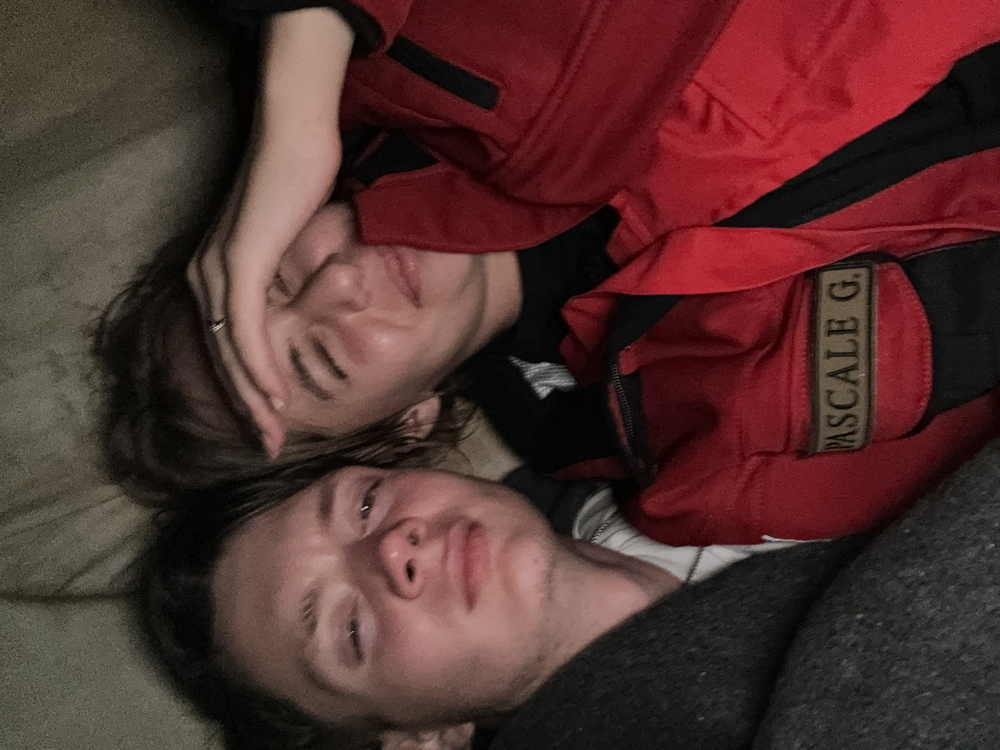

Sunt un baiat bun
Sunt un baiat bun si vreau sa iti fiu sot si sa iti fiu tata al copiilor tai, sunt smecher, imi merge capu, te iubesc din tot sufletul meu si iti doresc numai binele, si stiu sa fierb apa, ce sa mai, sunt bun de insurat, DOAR CU TINE!!!!!!!!! 
O sa dormim impreuna pentru totdeauna
Daca ma iei de sot vom putea dormi impreuna pentru totdeauna, vom putea gati impreuna, vom face multi multi bebe, vom face baita impreuna si ne vom petrece tot restul vietii impreuna
Fun Facts
Pe Gabi o cheama Gabi, o va chema Domnisoara Doctor Bobeica Gabriela. Este nascuta pe 26 octombrie 2006. Poarta la inel marimea 52. Pe data de 9 august 2023 la ora 23 ne-am cunoscut, pe data de 29 august a realizat ca ma place, doamne ce noroc pe mine, pe data de 24 octombrie mi a spus ca ma iubeste si pe 28 octombrie ne-am oficializat relatia. Poreclele: zana mea, dragostea mea, sufletul meu, unicornul, delfino, iubire, iubita mea, frumoaso, sotia mea, femeia mea, rapanoaso, paduchioaso. Acum pe o nota serioasa iubire, te iubesc din tot sufletul meu, tu esti totul meu, viitorul meu, esti tot ce mi-am dorit vreodata.